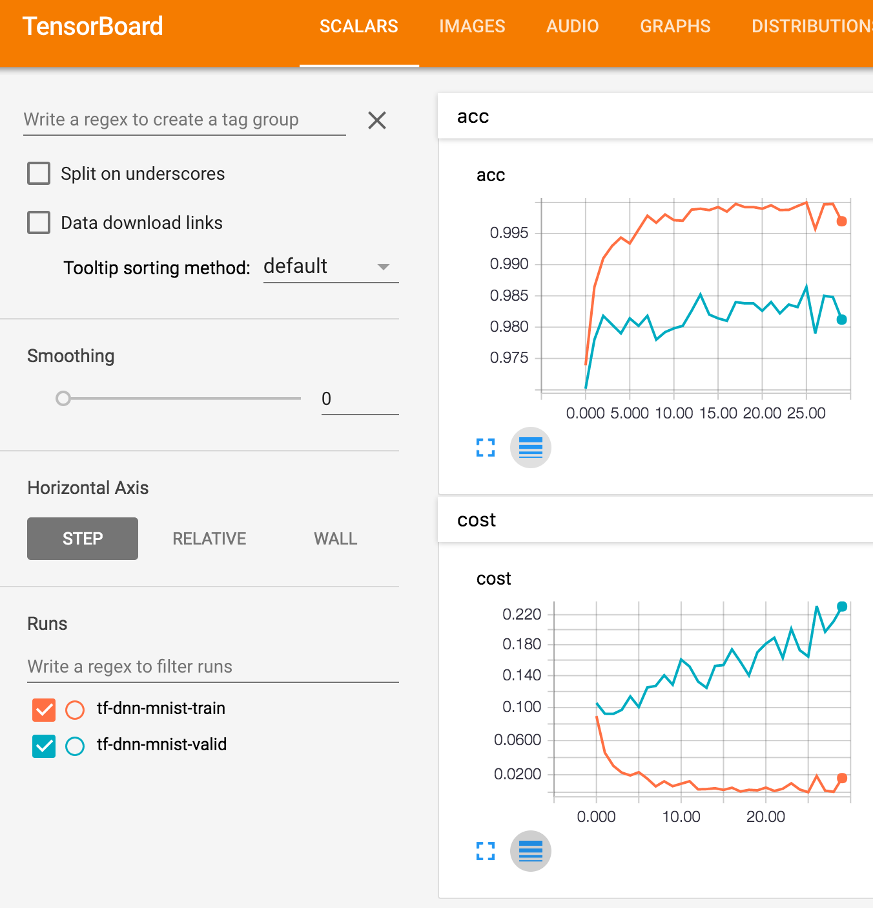

Tensorflow를 이용해서 DNN(Deep Neural Network)으로 MNIST 데이터 셋을 분류해 보도록 하겠습니다.
MNIST 데이터 셋은 Tensorflow에서 Mnist 데이터셋 살펴보기에서 다루었었으므로 참조하세요.
In [1]:
import matplotlib.pyplot as plt
import matplotlib.image as img
import numpy as np
%matplotlib inline
import tensorflow as tf
from tensorflow.contrib.learn.python.learn import datasets
In [2]:
mnist = datasets.mnist.read_data_sets("MNIST_data/", one_hot=True)
In [3]:
# Deep Neural Network를 구성해 봅니다.
# MNIST 데이터셋의 image 차원은 784이고,
# label은 0-9까지인데 one hot 인코딩 되어있기때문에 10 으로 설정합니다.
with tf.name_scope("inputs"):
x = tf.placeholder(tf.float32, shape=[None, 784])
y = tf.placeholder(tf.float32, shape=[None, 10])
keep_prob = tf.placeholder(tf.float32)
# 각 층은 전단계 층 차원의 반이 되도록 weight와 bias를 생성했습니다.
# 층이 깊어 질수록 weight와 bias의 초기 값은 학습속도에 영향을 미칩니다.
# 정규 분포 랜덤 값 초기화를 많이 사용하였지만, 여기서는 학습일 잘된다는 xavier 초기 값을 사용했습니다.
with tf.name_scope("weights"):
w1 = tf.get_variable(name="w1", shape=[784, 392], initializer=tf.contrib.layers.xavier_initializer())
b1 = tf.get_variable(name="b1", shape=[1, 392], initializer=tf.contrib.layers.xavier_initializer())
w2 = tf.get_variable(name="w2", shape=[392, 196], initializer=tf.contrib.layers.xavier_initializer())
b2 = tf.get_variable(name="b2", shape=[1, 196], initializer=tf.contrib.layers.xavier_initializer())
w3 = tf.get_variable(name="w3", shape=[196, 98], initializer=tf.contrib.layers.xavier_initializer())
b3 = tf.get_variable(name="b3", shape=[1, 98], initializer=tf.contrib.layers.xavier_initializer())
w4 = tf.get_variable(name="w4", shape=[98, 49], initializer=tf.contrib.layers.xavier_initializer())
b4 = tf.get_variable(name="b4", shape=[1, 49], initializer=tf.contrib.layers.xavier_initializer())
w5 = tf.get_variable(name="w5", shape=[49, 10], initializer=tf.contrib.layers.xavier_initializer())
b5 = tf.get_variable(name="b5", shape=[1, 10], initializer=tf.contrib.layers.xavier_initializer())
# 정규 분포 랜덤 값 초기화
# w1 = tf.Variable(tf.random_normal([784, 392], stddev=0.1))
# b1 = tf.Variable(tf.random_normal([1, 392], stddev=0.1))
# w2 = tf.Variable(tf.random_normal([392, 196], stddev=0.1))
# b2 = tf.Variable(tf.random_normal([1, 196], stddev=0.1))
# w3 = tf.Variable(tf.random_normal([196, 98], stddev=0.1))
# b3 = tf.Variable(tf.random_normal([1, 98], stddev=0.1))
# w4 = tf.Variable(tf.random_normal([98, 49], stddev=0.1))
# b4 = tf.Variable(tf.random_normal([1, 49], stddev=0.1))
# w5 = tf.Variable(tf.random_normal([49, 10], stddev=0.1))
# b5 = tf.Variable(tf.random_normal([1, 10], stddev=0.1))
# 깊은 층에서도 back propagation 이 잘되도록 relu 함수를 사용합니다.
# softmax 를 적용하기 전 층에 overfitting을 방지하기 위하여 drop out을 적용해주었습니다.
with tf.name_scope("layers"):
l1 = tf.nn.relu(tf.add(tf.matmul(x, w1), b1))
l2 = tf.nn.relu(tf.add(tf.matmul(l1, w2), b2))
l3 = tf.nn.relu(tf.add(tf.matmul(l2, w3), b3))
l4 = tf.nn.dropout(tf.nn.relu(tf.add(tf.matmul(l3, w4), b4)), keep_prob)
l5 = tf.add(tf.matmul(l4, w5), b5)
# cost 함수는 softmax 를 위해 cross entropy 함수를 사용하였습니다.
# optimizer는 학습 속도가 빠르다고 알려진 AdamOptimizer를 사용하도록 하였습니다.
with tf.name_scope("optimize"):
cost = tf.reduce_mean(tf.nn.softmax_cross_entropy_with_logits(l5, y))
optimizer = tf.train.AdamOptimizer(0.001).minimize(cost)
# 예측시 훈련된 NN의 마지막 층에 softmax를 적용해 줍니다.
# softmax가 적용된 값은 확률 값이기에 one hot 인코딩 된 실제 label과 직접 비교할 수 없으므로,
# 최대 값의 인덱스를 돌려주는 argmax 함수를 통해 실제 label과 예측 label을 비교하고 정확도를 계산합니다.
with tf.name_scope("evaluate"):
pred_y = tf.nn.softmax(l5)
corr_ys = tf.equal(tf.argmax(pred_y, 1), tf.argmax(y, 1))
acc = tf.reduce_mean(tf.cast(corr_ys, tf.float32))
In [4]:
# cost 값과 accuracy 값의 변화를 TensorBoard로 볼 수 있도록 설정합니다.
tb_cost = tf.summary.scalar("cost", cost)
tb_acc = tf.summary.scalar("acc", acc)
tb_merge = tf.summary.merge_all()
def mkdir(dir_path):
if tf.gfile.Exists(dir_path):
tf.gfile.DeleteRecursively(dir_path)
tf.gfile.MakeDirs(dir_path)
# Tensorflow Session을 생성하고 DNN을 훈련합니다.
with tf.Session() as sess:
# 기존에 생성된 TensorBoard 정보가 있다면 디렉토리를 삭제하고 다시 생성합니다.
train_path = "../logs/tf-dnn-mnist-train"
valid_path = "../logs/tf-dnn-mnist-valid"
mkdir(train_path)
mkdir(valid_path)
# train 과 validation용 TensorBoard wirter 를 생성합니다.
train_writer = tf.train.SummaryWriter(train_path, sess.graph)
valid_writer = tf.train.SummaryWriter(valid_path, sess.graph)
for epoch in range(0, 30):
# Tensorflow 세션을 초기화 합니다.
# r12 버전 부터 초기화 함수가 global_variables_initializer()로 변경되었습니다.
init = tf.global_variables_initializer()
sess.run(init)
# 각 epoch 마다 생성되는 훈련된 모델을 저장하기 위한 saver를 생성합니다.
saver = tf.train.Saver()
# 기존에 훈련된 모델이 있으면 로드합니다.
path_format = "../models/tf-dnn-mnist-%03d/"
prev_model_path = path_format % (epoch - 1)
prev_model_file = "%s%s" % (prev_model_path, "model")
if tf.gfile.Exists(prev_model_path):
saver.restore(sess, prev_model_file)
# 여기서는 1000 step을 1 epoch로 규정하고 모델을 훈련합니다.
for step in range(1000):
# MNIST 데이터셋 모듈의 next_batch() 함수를 통해
# 랜덤 샘플 100개의 train 데이터를 optimizer를 통해 최적화 합니다.
# 훈련시에는 drop out 참여율을 0.5 로 제한하고 예측시에는 1.0으로 올려줍니다.
train_batch_xs, train_batch_ys = mnist.train.next_batch(100)
sess.run(optimizer, feed_dict={x: train_batch_xs, y: train_batch_ys, keep_prob: 0.5})
# train 과 validation 데이터셋의 cost 와 accuracy를 비교하여
# 모델이 overfitting되는지 모니터링 합니다.
# train cost 가 지속적으로 감소할때 validation cost 가 증가 한다면
# overfitting 된 경우일 것이므로 해당 epoch 전의 모델을 사용하면 됩니다.
train_cost, train_acc, train_summary = sess.run([cost, acc, tb_merge], feed_dict={x: mnist.train.images, y: mnist.train.labels, keep_prob: 1.0})
train_writer.add_summary(train_summary, epoch)
valid_cost, valid_acc, valid_summary = sess.run([cost, acc, tb_merge], feed_dict={x: mnist.validation.images, y: mnist.validation.labels, keep_prob: 1.0})
valid_writer.add_summary(valid_summary, epoch)
print "epoch: %d, train_cost: %s, train_acc: %s" % (epoch, train_cost, train_acc)
print "epoch: %d, valid_cost: %s, valid_acc: %s" % (epoch, valid_cost, valid_acc)
# 현재 훈련된 모델을 저장합니다.
curr_model_path = path_format % epoch
curr_model_file = "%s%s" % (curr_model_path, "model")
mkdir(curr_model_path)
saver.save(sess, curr_model_file)
train_writer.close()
valid_writer.close()
In [5]:
# 훈련 중 epoch 마다 저장된 DNN 을 로드하여 test 데이터셋을 통해 최종적으로 사용할 모델을 선택합니다.
with tf.Session() as sess:
for epoch in range(30):
init = tf.global_variables_initializer()
sess.run(init)
saver = tf.train.Saver()
path_format = "../models/tf-dnn-mnist-%03d/"
curr_model_path = path_format % epoch
curr_model_file = "%s%s" % (curr_model_path, "model")
saver.restore(sess, curr_model_file)
test_acc = sess.run(acc, feed_dict={x: mnist.test.images, y: mnist.test.labels, keep_prob: 1.0})
print "epoch: %d, test acc: %s" % (epoch, test_acc)
TensorBoard를 통해서도 각 train, validation의 cost와 accuracy를 확인 할 수 있습니다. 